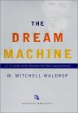

Rocky Frisco's Cousin "Lick,"
Robinet "Lick" Licklider
The Real Father of the Internet
ORDER THE BOOK
Brand New Listing!

The Dream Machine: J.C.R. Licklider and the
Revolution That Made Computing Personal
by M. Mitchell Waldrop
Hardcover - 528 pages (August 23, 2001)
Viking Press; ISBN: 0670899763
Dimensions (in inches): 1.56 x 9.64 x 6.46
List Price: $29.95
Amazon.com Price: $20.96
You Save: $8.99 (30%)
TO ORDER THIS BOOK, CLICK HERE
Contact Information: